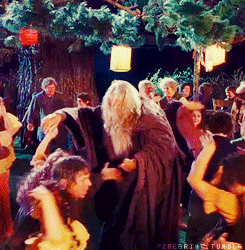

The Elves, who called themselves the Quendi, and who in lore are commonly referred to as the Eldar (adj. Eldarin), were the first and eldest of the Children of Ilúvatar, and are considered to be the fairest and wisest of any race of Arda given sapience.
The Maiar (singular Maia; Quenya, pronounced [ˈmaɪ. ar]) were those spirits which descended to Arda to help the Valar shape the World. They were numerous, yet not many were named, and few also took visible shapes in Middle-Earth.
The race of Men in Tolkien's fictional world is the second race of beings, the "younger children", created by the One God, Ilúvatar. Like Elves, Men first awoke in the East of Middle-earth, spreading all over the continent and developing a variety of cultures and ethnicities. Unlike Tolkien's elves, Men are mortal.
Dwarves were long-lived, with a lifespan of some 250 years. ... The Dwarves are described as "the most redoubtable warriors of all the Speaking Peoples" – a warlike race who fought fiercely against their enemies, including other Dwarves.
Hobbits, also known as Halflings, were an ancient mortal race that lived in Middle-earth. Although their exact origins are unknown, they were initially found in the northern regions of Middle-earth and below the Vales of Anduin. Most of their race eventually founded the land of the Shire.
Orcs were the primary foot soldiers of the Dark Lords' armies and sometimes the weakest (but most numerous) of their servants. They were created by the first Dark Lord, Morgoth, before the First Age and served him and later his successor in their quest to dominate Middle-earth.
Congratulations you are drinking with !
Learn more about your drinking buddy here.
| Measurements | Ingredients |
|---|
Saved!
| Drink | Companion | Rating |
|---|